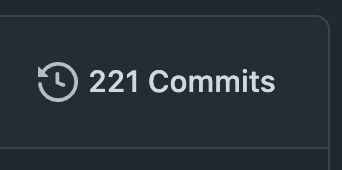
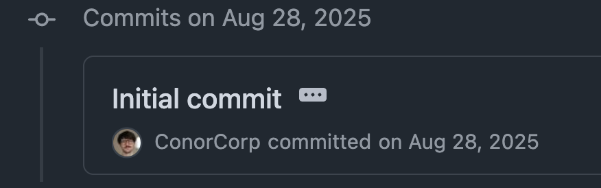
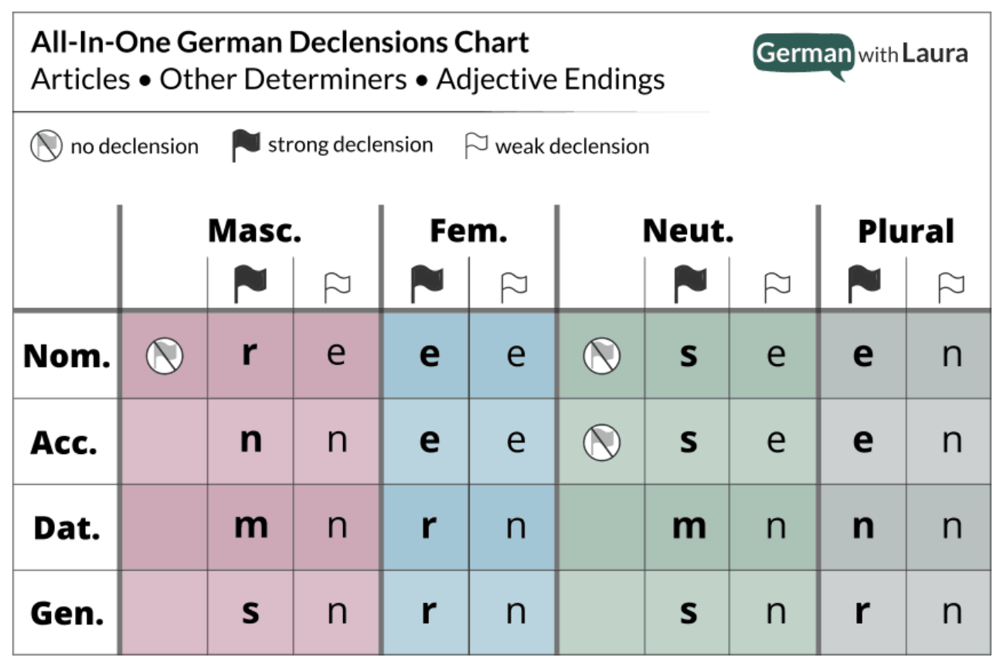
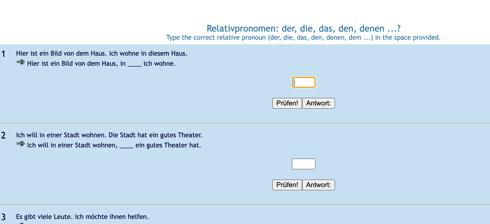
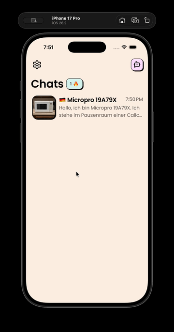
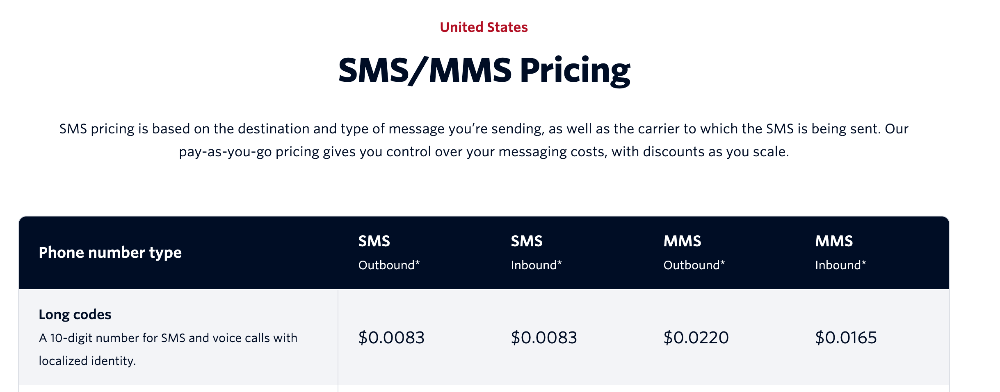
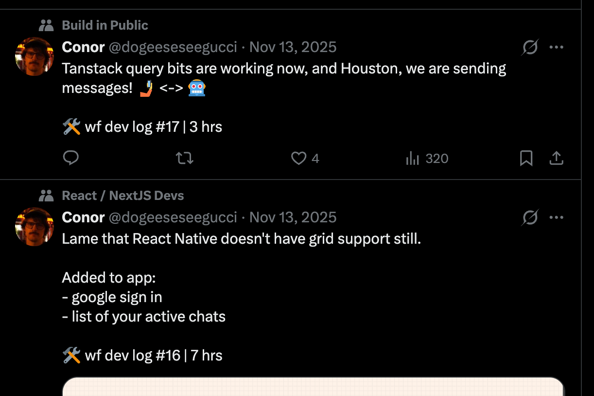
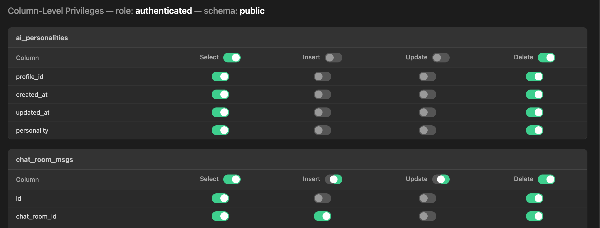
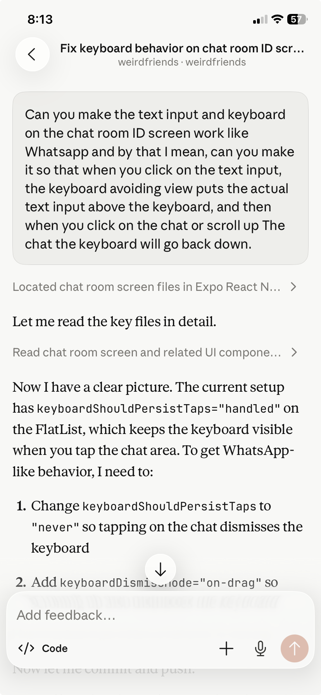

No AI was used in writing this blog, only checking typos.
intro, or: time for me to learn from failure again
I’m currently failing to launch an app.
I’ve logged 221 commits.

I’ve worked on it for about 7 months on the side of my main work.

Yet here we are. It’s been live for about a month and I haven’t had the stones to tell people to try it.
Ofc, I’m mentioning it now, but I’m actually not telling you, dear reader, to try it either. Not yet, anyways.
So what am I writing about then? Basically, I just feel kind of dumb.
I’ve spent all this time on an app and still am not excited to show it off, so I thought I’d do a little post mortem reflection on the state of the project:
What I’ve done wrong, what I’ve done well, and what I’ll do next in hopes of learning from my mistakes and enjoy showing off what I build in the future faster.
about weirdfriends

A great chart from German with Laura on declining adjectives. This is assuming you know the noun’s gender to begin with…
The idea for weirdfriends comes from a simple problem:
learning the german language is god damn tough
I take regular classes 2x a week, but it’s not enough to really get natural with a language. You’ve got to be practicing everyday, at least a bit, and this is where I’ve found the language landscape lacking.
my big issues as an intermediate language learner
1. finding engaging and productive practice is painful

Finding exercises for relative sentences. Get used to this.
- Google searching for specific exercises to drill into concepts leads to ancient websites, with weird UIs, vocab you haven’t learned yet, and just plain boring content.
- Exercises you find online aren’t recurring. Once you finished one website’s exercises, you have to find another that hopefully has decent content.
- Big language apps are so boring:
- Duolingo is just the same thing over and over again, endlessly rote learning words, with manipulative streak dynamics.
- Babbel is definitely more useful and better for actual learning, but the content just gets SO BORING.
- It can be hard to drill on specific concepts with these apps, especially if it doesn’t align to their curriculum.
2. getting conversational is embarrassing and hard
I found this especially true for German until you’re like B1-B2, compared to something like Spanish where I could chat enough around A2 to kickstart the positive learning feedback loop.
If you’ve ever tried learning a language, you know this. It sucks just making mistakes all the time, derailing conversations your mates are having, and then just switching back to English to keep the convo going.
You need a place that’s quick to make and see your mistakes, and fix them congnizantly.
As a side note, real conversation is so different to what you read in a textbook (that’s likely 10+ years old).
You need to learn how people actually talk, and how they talk in your scene, whether in programming, at a punk show, or in a beer hall.
my solution to all this woe
You’ll never guess what I though of…
…
AI.
I thought of an AI language learning app 😐
I thought: “Wouldn’t it be cool if I could skip all the boring Duolingo shit, and just let AI characters text me in German when I’m on the train? Then we could chat about whatever I want too. They could be funny and be in engaging and weird situations, or more practical ones I could curate that I need to learn about.”
That’s basically the idea for weirdfriends. Sounds straight forward to build right?
I thought I’d be done in 2 months and it’d be a fun app!
what i did wrong ❌
it wasn’t fun

Covering the basic features of weirdfriends
I mean building it was fun, but the actual app’s core loop isn’t.
This in itself isn’t that bad to be wrong about — it’s just a v1, it’s fine to iterate until you get a fun game loop.
I built an app with a few hand-crafted AI characters that you match with as a user. They will chat with you in whatever language you’re learning, correct your errors, and it even has automatic translations.
This is all great on paper, but it just ends up being kind of boring. The worst of all outcomes!
I did not add situations or specific exercises for v1. I just told the characters to start a chat and be chatty, hoping the AI would generate its own fun and zany situations. Which it actually can do, but to get it to that zany point just has a bit too much friction.
LLMs actually aren’t great at creating random/varied situations, it kind of needs to be provided randomized inputs.
This means the user has to prompt the AIs about what to talk about, and the AI ends up asking too many questions which feels very inhuman and stale. There’s no sense of progression or more importantly: Something to do, something to complete.
Which comes to my learning: I should have focused on the game loop first. Making it fun for me instead of building a whole app to test it. More on this below.
building a whole app instead of honing the core loop first
This is the cardinal, and ever-broken programmer sin. It’s so seductive.
“Fuck the game loop (see: hard part), I want to try out that new UI library, and work with that neat looking db. This is like a 2 month project anyway, so this’ll be quick and then I’ll focus on the core of the app (see: game loop) when it’s out, with real data.”
The second sentence almost sounds like competent startup advice. Put something out quick and learn from data.
But here I sit, not telling anyone about the app because I, personally, don’t like the game loop. The fact that I’m not using my open app regularly is proof enough for me.
Learning: Don’t skip the hard part. Test out the game loop and make yourself happy enough first that you have fun with it. You will naturally want to show it off without caveat then.
😈 Evil Extra Credit:
Tell yourself: “It doesn’t matter that this is taking months because it’s actually me learning new tech.”
This is denial.
😇 Good Extra Credit:
Once you have a game loop down, focus next on what’s the cool way you’d show this off in app screenshots or a demo gif before building. People click on something that looks cool, and build that idea first.
not leaning hard enough into a niche / identity at the start
This one is smaller, but I definitely should’ve focused more on intermediate language learners first, who are sick of Duolingo. And just focused on 1-2 of the top languages.
It’s much more compelling for those users as it’s so “them”. You can make it like:
We’re the best place to learn specifically German, for YOU, a user who’s A2+, and learning faster than Duolingo.
Rather than being another app in the long march of:
Learn any language with AI chats.
Learning: Scope down even more to a user identity who you can absolutely WOO 😍 with messaging. This app is FOR THEM.
what i did right ✅
try not to build an app first

SMS is expensive, I get that, but why are whatsapp messages? its just network requests?
In fairness to myself, my original idea was to use pure SMS/WhatsApp to meet people where they’re at instead of building an app.
I researched this and found the APIs prohibitively expensive. WhatsApp and SMS APIs are both like a cent or more per message sent/received, and that just isn’t feasible for the cheaper monthly price I like to offer people to send 1000s of messages.
I think this will change with how much AI applications are flourishing, and I think it’s already showing in how Telegram will do well here, but I predict messaging (at least WhatsApp’s) APIs will become much cheaper to allow for more 3rd party AI applications.
building in public

some of my ‘build in public’ logs
About 2 months into working I decided to try building in public, posting at least 1 twitter post whenever I worked on weirdfriends.
I’ve heard so many indie hackers extol the benefits of this, and I completely agree.
I actually kind of hate twitter and supporting Elon Musk, and almost everybody in the Build In Public group seems to be a bot or “trying to build a brand” type people.
Yet, I found it quite rewarding for tracking my own progress and every once in a while getting a real comment or follow to my email list. There’s real power in boiling down to 1-2 sentences what you spent your time on.
I will do it again, but I really wish Bluesky or Mastodon had more of a community for this. Please let me know if so. Reddit has r/BuildInPublic one, but it feels more like posting/marketing at people rather than being in a community. Indie hackers forum was great for this but unfortunately seems a bit lifeless now.
my app stack
Here’s the part where I show you all the shit that I shouldn’t have built. But I kind of love all the tech. Meticulously chosen and it’s all working well.
frontend: react native + expo
I haven’t started a new react native build in like 7-8 years since Skintheory, and now Expo is amazing. It makes react native and dealing with the app stores so much better. Continuous Generation <3
I will happily pay these guys when the time comes. Their free plan is quite generous actually (although I wish their MCP wasn’t paywalled)
On another side note, I think apps are still a bitch to actually publish which creates a natural, albeit small, moat in this new AI landscape.
backend: supabase + cloudflare workers + langchain
supabase

A little app I built with claude to manage my local supabase’s RLS/CLS.
I really love the supabase dx & Postgres.
I really, really love RLS/CLS. I think that backends should be built & protected automatically from the choices you make in your data model when possible. Then you add only minimal hand-coded endpoints on top for specific server side effects.
Also, Supabase’s MCP is so incredibly useful for dev and schema updates.
cloudflare workers
Super dx friendly. Kicks the crap out of lambda + serverless dx. Great ecosystem.
langchain
This is a super unstable library, but still seems like the leading choice for making agents. I made the crazy, absolutely bonkers choice to use their TypeScript library (instead of Python) and it works great, and will scale to whatever I want to do with an agent.
started really using claude, and claude cloud runs

An actual claude code run I committed to the app.
Claude is kind of incredible, which I almost hate to admit. With Opus 4.6, I really noticed a huge improvement.
For the first time ever I could make quick app updates while out an about:
- Come up with idea on the go
- Talk to claude on your phone, to give it a mini PRD
- Let it check out your repo and build a feature PR
- Test it when you’re home and commit
and it’s sweet. Like so cool. Can’t wait to close this loop even more with screenshots, full builds, and auto testing with MCP servers like mobile-mcp.
conclusion
I’m happy with the project still. I’m not dejected, like I’ve been with other side projects that failed, but I think I can build stuff faster and more effectively still.
⭐ main learning ⭐
- Focus on the core loop first. Make it fun for you, so you actually do use it regularly, before building the scaffolding. Quickly build and throw away iterations.
- If you do this, you will naturally want to show it to people, and be happy to market it, instead of this strange avoidance thing you’re doing.
side learnings
- scope to a small, and niche (person) who you can bombastically WOO 😍 them with how amazing your product is for just them
- build in public, even if just for logging purposes
- when making a feature, think early on about the coolest part to show, what the screenshot or demo gif should be
what I’ll do now
Against all common startup advice, my plan is to: Build a bit more.
This time though, it will be small, quick iterations on the game loop. Ideally, I’ll land on something I’ll be excited to tell people about next month because I am actually enjoying it myself.
My hypothesis is that I need a core game loop based around:
- actual missions to complete (finish exercise, learn something specific, complete a situation (i.e. order a coffee in a dwarven bar))
- Like an actual start and end instead of just one long conversation. Imagine if Call of Duty didn’t have missions but just one 8-hour campaign that keeps going? It would be weird to pick up and put down randomly. You need to complete stuff in units. (RIP single player campaigns 🥀)
- visible learning progression
- People need to feel like they’re moving forward towards competency.
I’m going to ship missions by May 15 and write log #2 about whether it worked or not. Feel free to join my weirdfriend’s mailing list if you want to know what I land on and test it out!
Would love to know as well if you have any comments on the app or blog here. Always makes me happy to know someone actually read these.